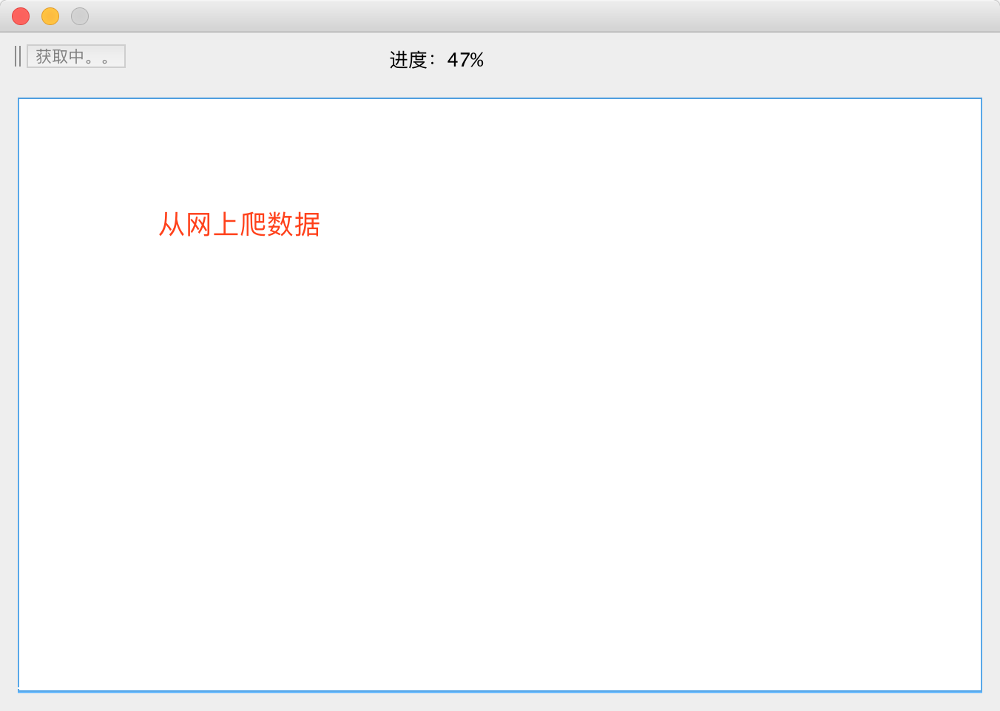
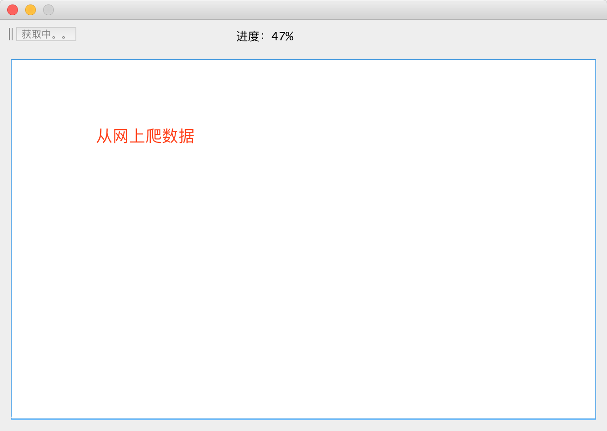

这是我做的爬虫电影一键获取器
这个是我在实训中做的小小小项目,能够快速安全的拿到100部最新的电影下载资源,只需要复制右边的下载链接在迅雷中新建就可以下载
源码地址:
https://github.com/hengye259/GetMovie效果图:

ps:每隔两天会重新更新一次数据,两天内会缓存
这个是我在实训中做的小小小项目,能够快速安全的拿到100部最新的电影下载资源,只需要复制右边的下载链接在迅雷中新建就可以下载
源码地址:
https://github.com/hengye259/GetMovie效果图:

ps:每隔两天会重新更新一次数据,两天内会缓存